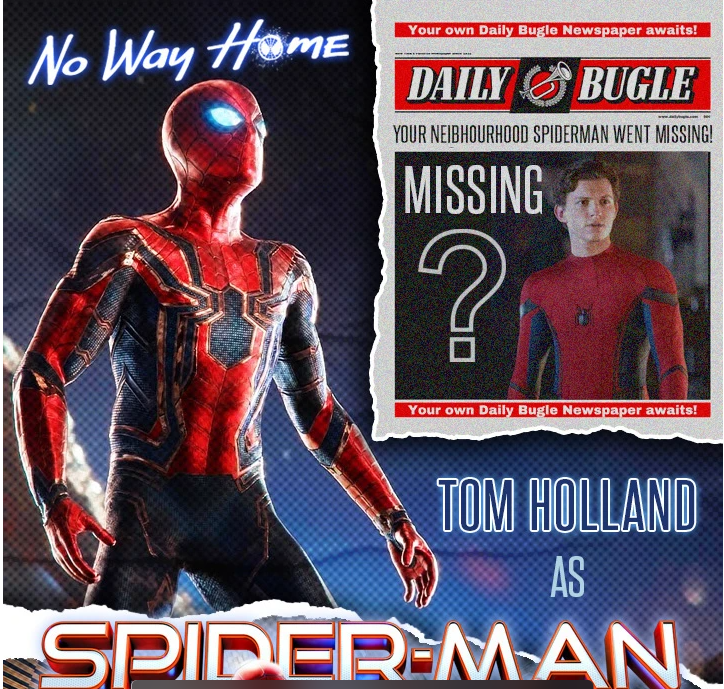

About the Movie

Spider-Man: No Way Home is a superhero movie released in 2021. It follows Peter Parker after his identity as Spider-Man is revealed to the world. He asks Doctor Strange for help, but things do not go as planned. The movie takes viewers on an exciting journey through the multiverse.
My Favourite Characters
- Peter Parker (Spider-Man)
- Doctor Strange
- MJ
- Ned Leeds
- Green Goblin
My Most Memorable Scenes
| Scene | My Rating |
|---|---|
| Doctor Strange's spell goes wrong | 9/10 |
| All three Spider-Men meet | 10/10 |
| The final battle | 10/10 |
Recommend a Scene
Click the button to see my recommended scene!